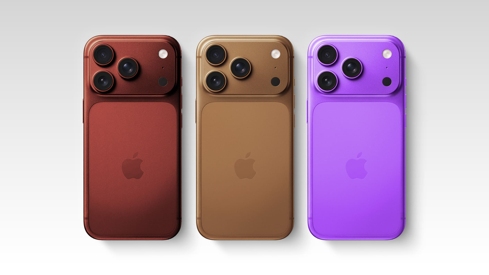

iPhone 18 Pro: Revolutionary Camera System Released
A bold new leap from iPhone 18, designed to capture the world at its best.
A camera engineered to become your next best pair of eyes.
Supun Indeepa
1 Week ago
The iPhone 18 debuts the QuantumFusion Pro Camera System, a leap forward in mobile photography that redefines what a smartphone lens can achieve. At its heart lies the UltraSense 500MP main lens, engineered with a Neural Depth Matrix sensor that perceives light and texture beyond the limits of human vision. Imagine capturing the shimmer of dew at dawn, the subtle grain of a painter’s brushstroke, or the faint glow of distant constellations, this camera makes the invisible visible. The new Adaptive Reality Zoom offers seamless transitions from extreme macro shots to cosmic panoramas, letting you glide from the veins of a leaf to the rings of Saturn without losing clarity. Complementing this is DreamColor HDR+, a rendering engine that infuses every image with surreal vibrancy and lifelike contrast, ensuring your photos radiate with cinematic depth. Low-light performance has been revolutionized with Starlight Mode, which transforms night into near-daylight without artificial harshness. Motion blur is virtually eliminated thanks to ChronoLock Stabilization, a system that freezes action with precision, whether it’s a hummingbird mid-flight or a dancer spinning across the stage.
But the iPhone 18 camera doesn’t stop at capturing; it curates. With AI StoryFrame, your device intelligently organizes photos into narrative sequences, weaving moments into living memories. Portraits gain new emotional resonance through SoulFocus, a feature that subtly enhances expressions to reflect the mood of the moment. Video recording reaches unprecedented heights with Cinematic Infinity Capture, delivering 16K resolution at 240fps, complete with spatial audio that immerses viewers in the scene. Every shot, every frame, every detail is designed to feel less like a photograph and more like a portal into experience. The iPhone 18 camera isn’t just about documenting life, it’s about elevating it into art. Beyond its technical brilliance, the iPhone 18 camera is designed as a creative partner.Whether you’re a professional filmmaker, a casual storyteller, or someone who simply loves to share life’s moments, the camera adapts to your style, anticipating your needs, enhancing your vision, and empowering you to express yourself with unprecedented freedom.